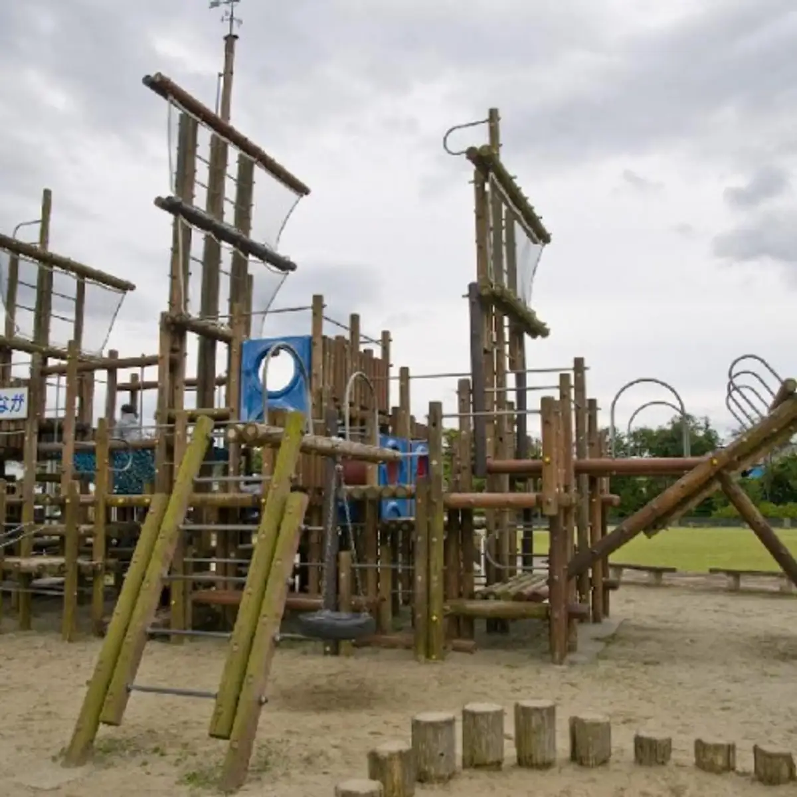
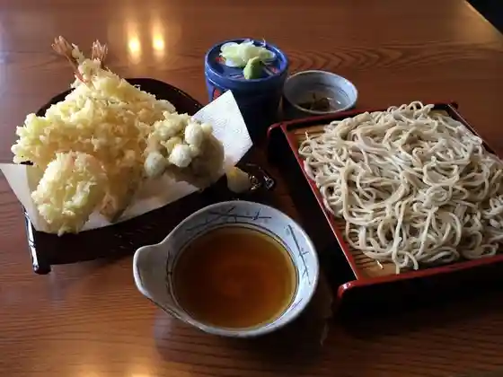
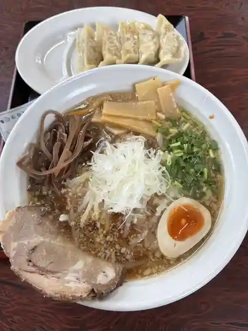
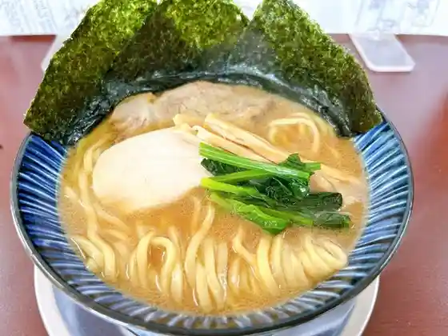
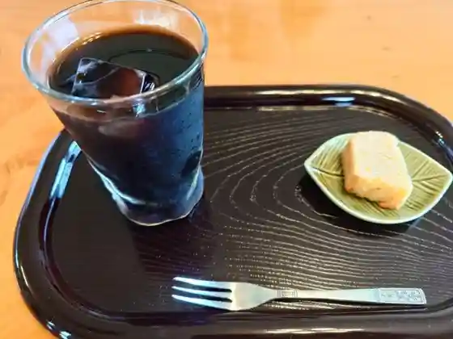
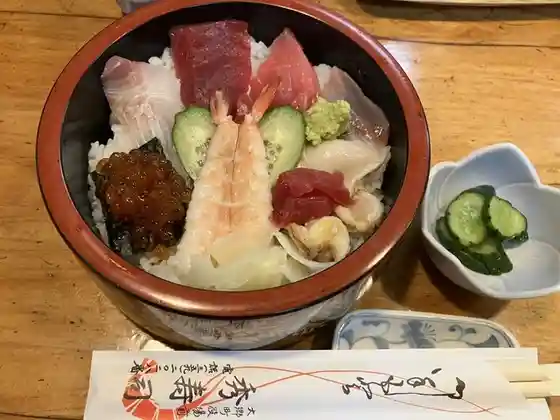
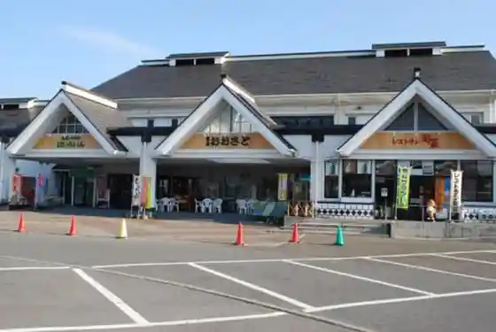
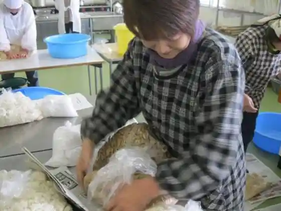

Osato
Osato · Miyagi
Osato
Highlighted on the Miyagi map.

Dining
金天庵
Kin Ten Iori

ミルク モンスター
Miruku Monsutaa
道の駅おおさと
Michi No Eki Oosato
旅人の食堂
Tabibito No Shokudo

とんこつラーメン 麺笑
Tonkotsu Raamen Men Warai

麺屋 鶏楽
Men Ya Niwatori Raku
うまいもんや 夢花草屋
Umaimonya Yumehana Kusaya

ごはん+きっさ ひより
Gohan + Kissa Hiyori

秀寿司
Hidehisa Tsukasa
中国菜館煌華
Chuugoku Saikan Kou Hana
食彩館
Shokusai Kan
おおさと食堂
Oosato Shokudo
俄飯店
Ga Hanten
松島国際カントリークラブ
Matsushima Kokusai Kantoriikurabu
うな遊 さかい
Una Yuu Sakai
おおさとゴルフ倶楽部
Oosato Gorufu Kurabu
北京
Pekin
支倉の浪漫
Hasekura No Rouman
ベッセル
Besseru
しぶやんの珈琲店
Shibuyanno Koohii Mise
かのん精肉舗
Kanon Seiniku Ho
パン工房わ・は・わ
パン工房わ・は・わ
セカンドキッチン 丸福食堂
Sekandokitchin Marufuku Shokudo
のうぎょうけんこうけんきゅうしょ
Nougyoukenkoukenkyuusho
セブンイレブン 大郷町店
Sebun'irebun Oosato Machi Mise
セブンイレブン 大郷大松沢店
Sebun'irebun Oosato Oomatsuzawa Mise
福美
Fukumi
ボートピア大郷ファーストフードコーナー
Bootopia Oosato Faasutofuudokoonaa
餅カフェ Pettan
Pettan
雨月珈琲 大郷店
Ugetsu Koohii Oosato Mise
Chugoku Saikan Koka
Chugoku Saikan Koka
Yumeminokuni Oshokujidokoro
Yumeminokuni Oshokujidokoro
Moro Heiya
Moro Heiya
Drive In Osato
Drive In Osato
Chisan Restaurantosato
Chisan Restaurantosato
Shuccho Ramen
Shuccho Ramen
Hide Sushi
Hide Sushi
Marumiya Shokudo
Marumiya Shokudo
Furusato
Furusato
Shokusai Kan
Shokusai Kan
Ichizushi
Ichizushi
Hiyori Horumon Osato
Hiyori Horumon Osato
Onsen
Osato Onsen Yumemi no Yu
Osato Onsen Yumemi no Yu — open-air cascade baths and local craft beer
Shop
Osato Furusato Plaza Specialty Hall
Osato Furusato Plaza specialty hall — local produce and gifts

Sights
Gogo Land
Osato Development Center Hanryokura

Michinoeki Osato